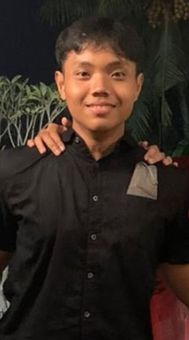

Latar Belakang
Ini merupakan pembelajaran pertama saya. Saya belajar tentang HTML CSS. Ini juga merupakan projek pertama HTML CSS saya sekaligus projek pertama yang saya buat. Saya belajar banyak dari pembelajaran ini tentang Web Dasar melalui Dicoding.
Perkenalan

Perkenalkan, saya Yotam Putra yang membuat web ini menggunakan HTML CSS. Saya berusia 17 tahun dan masih bersekolah di jenjang SMA. Setelah SMA, saya berencana untuk belajar dan bekerja di dunia IT ini. Sekian, terimakasih.
Hobi

Di waktu selang sepulang sekolah, saya akan pergi ke gym dan menghabiskan sekitar 2 jam di sana. Saya sangat senang dan konsisten menjalani hobi saya berolahraga. Walau begitu, jujur saja saya kurang suka berolahraga cardio, saya lebih menyukai weight lifting.
Contact
Instagram :
yotamputraa
Nomor : 089522101828